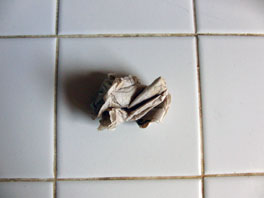
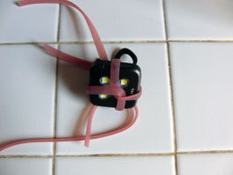

Week 12
No More Fire-Starting!
Preface
Some sentences introducing the project. Pellentesque habitant morbi tristique senectus et netus et the archaeologist Sarah Newman malesuada fames ac turpis egestas. Vestibulum tortor quam, feugiat vitae, ultricies eget, tempor sit amet, ante.
A few more sentences introducing the project. Donec eu libero sit amet quam egestas semper. Aenean ultricies mi vitae est. As the Brazilian artist Vik Muniz says of his project... Mauris placerat eleifend leo. Quisque sit amet est et sapien ullamcorper pharetra. Vestibulum erat wisi, condimentum sed, commodo vitae, ornare sit amet, wisi.
And one last thought. Nam dui mi, tincidunt quis, accumsan porttitor, facilisis luctus, metus.
Overview
Sentences introducing the overview. Placerat eleifend leo quisque sit amet est et sapien. Ullamcorper pharetra vestibulum erat wisi, condimentum sed, commodo vitae.
Paper Things
Some text about the paper things. The first thing I threw out this week, or actually recycled, was an old NJ Transit timetable for the New Brunswick station.
Plastic Things
Some text about the plastic things. It didn't make me happy, but on Friday I decided it was time to recycle my favorite pair of green plastic sunglasses. The one arm had become too loose for the glasses to stay on my head.
Fleshy Things
Some text about the fleshy things discarded this week. Morbi tristique senectus et netus et malesuada fames ac turpis egestas. Vestibulum tortor quam, feugiat vitae, ultricies eget, tempor sit amet, ante. Donec eu libero sit amet quam egestas semper. Aenean ultricies mi vitae est. Mauris placerat eleifend leo. Quisque sit amet est et sapien ullamcorper pharetra. Vestibulum erat wisi, condimentum sed, commodo vitae, ornare sit amet, wisi. Aenean fermentum, elit eget tincidunt condimentum, eros ipsum rutrum orci, sagittis tempus lacus enim ac dui. Donec non enim in turpis pulvinar facilisis ut felis praesent dapibus. Neque id cursus faucibus, tortor neque egestas augue. Eu vulputate magna eros eu erat aliquam erat volutpat nam. Accumsan porttitor, facilisis luctus, metus luctus est.
Gallery

Broken green sunglasses

A pair of old pegs, still working

Least favorite issue of the X-Men

Left hand, not working

Teleportation wristband, non-operative

An out-of-date train timetable

Napkin, modeling a small universe

Bicycle light (front), with tentacles

Novel by Arno Schmidt, untranslated
Item Data
| Explorer | Food | Dogs | Knives | Rope |
|---|---|---|---|---|
| Ron | Yes | 0 | No | Yes |
| Maddy | Yes | 3 | No | No |
| Ernest | Expired | 12 | Yes | Yes |
| Agathe | Limited | No | Yes | No |
| Explorer | Food | Dogs | Knives | Rope |
|---|---|---|---|---|
| Ron | Yes | No | No | Yes |
| Maddy | Yes | Yes | No | No |
Coda
Sentences of reflection and fairwell...